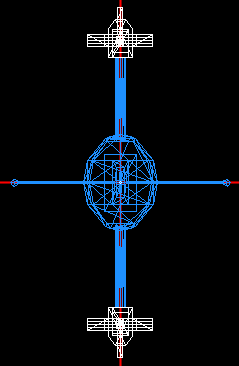
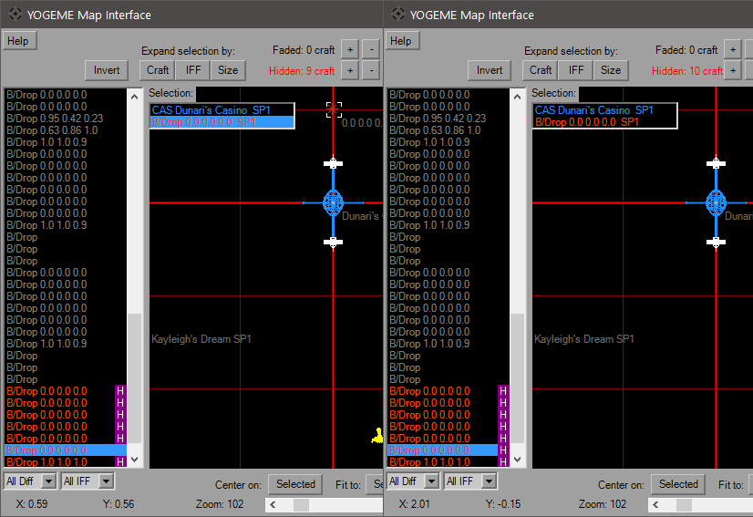
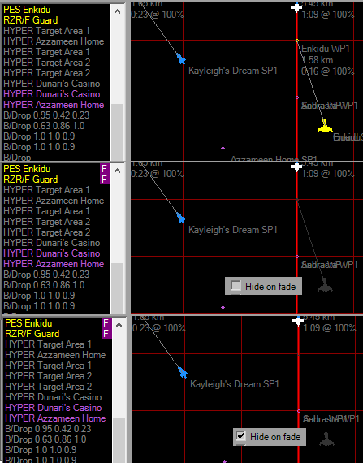
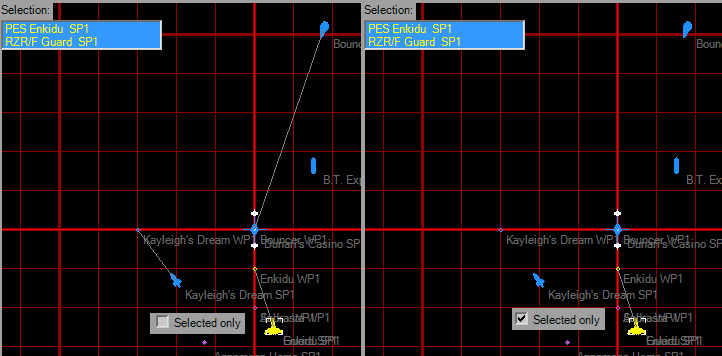

Map Dialog

The initial view will be X-Y top view, the upper right will allow you to view from the "side" and "front" of the mission space. Use the checkboxes on the right-hand side to show/hide additional waypoints. Selecting the BRF waypoint (not available in XWA) will hide all others. The disabled checkboxes will activate according to platform. If the view is too cluttered, you can select a Flightgroup on the left to hide it, or left-click the icon/wireframe (or box select) and select it in the popup. Use the Hidden '+' button or the 'H' key to hide it, which will remove it form the view and add a flag in the craft list. The Faded '+' or 'F' key will fade the wireframe instead or removing it completely. When a hidden/faded craft is selected (use the craft list if hidden), using the '-' button will restore it, or the 'None' button will restore all in the appropriate category, while the 'S' key will show all.
To move around the map, right-click and drag. The mouse wheel will zoom the map in and out in addition to the slider. Middle-click actions can be customized in the Options Dialog. Select and L-click drag a Flightgroup/WP to move it (Shift key no longer needed as of v1.8). If multiple craft are selected, the entire selection will be moved. The coordinates of your mouse pointer updates as you move over the map. There's snap options in the upper right that can control how the drag operations behave.


Hit the "Help" button for the full keyboard and mouse controls, as well as the usage of the filters to show/fade/hide Flightgroups.